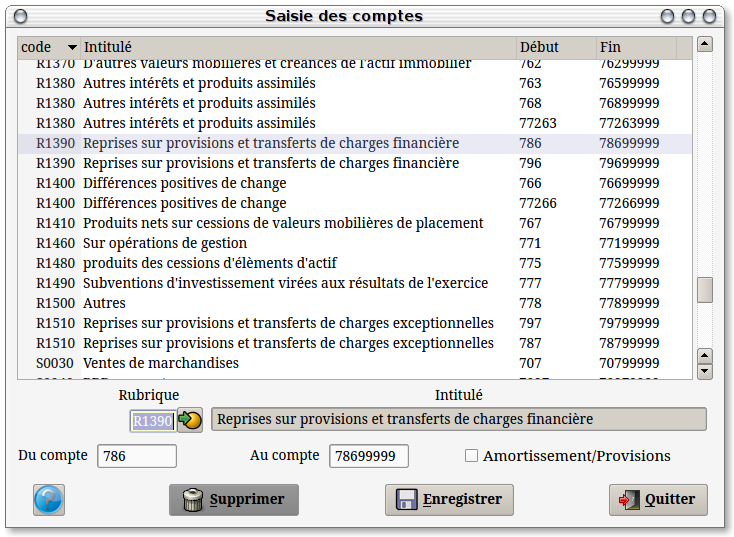

~ Comptabilité et Facturation Laurux ~

~ Comptabilité et Facturation Laurux ~ |
|
|
|

Saisir le code de la rubrique puis pour chaque rubrique un code de début et un code de fin.
Enregistrer pour chaque création ou modification.
----------------------------------------------------------------------------------------------------------------------